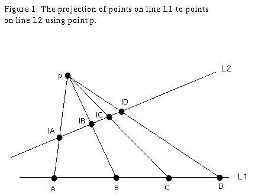
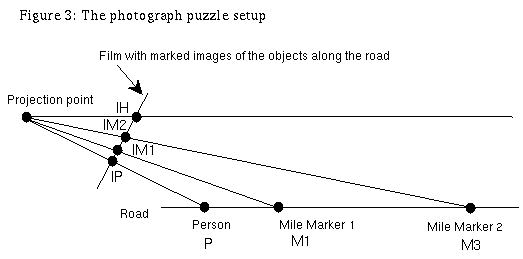

geometry.puzzles, Fri May 27 1994
First puzzle:
You have a photograph of a person in front of a sunset over the sea. Relative to the person in the picture, how tall is the photographer?
The answer:
Although it looks impossible at first, this problem does indeed have a solution. The important fact here is that the horizon is always at eye level. This is because we can assume the earth is flat. If you look up, you see the sky. If you look down, you see the ground. Thus to see the point transition between earth and sky, the horizon, you must look exactly horizontally. Assuming that the photographer holds the camera at eye level to take a picture, the placement of the horizon in the picture is the height of the photographer's eyes. Thus if the horizon is above the eyes of the person in the picture, the photographer is taller, whereas if the horizon is below the eyes of the person in the picture, the photographer is shorter.
Second puzzle:
Now that you have tried that one, here is a harder question. You have a photograph of a person standing on a long perfectly straight road, which you can see all the way to the horizon. In the photograph you can see two mile markers. How do you work out how far the person is from the first mile marker?
Answer to the second puzzle:

This answer has to do with the invariance of cross ratios. Thus I make a small digression to say what cross ratios are. This treatment is based on the beautiful treatment in "What is Mathematics" by Courant and Robbins. In the plane, a point p determines a map between two lines called the projection map. To project point x on line L1 to a point on line L2, draw a line through p and x and see where it hits L2. See Figure 1.
What quantities are invariant for all projections from L1 using p? The cross ratio is such a quantity; given points A,B,C,D on a line, their cross ratio is (CA/CB)/(DA/DB). If A2,B2,C2,D2 are the projections of A,B,C,D respectively, then the cross ratio of these points is equal to the cross ratio of A,B,C,D. For a proof, see Figure 2.

Back to the puzzle. The camera is projecting points along a straight road onto the straight image of the road on the film. We know the placement on the photograph of the person's image, mile marker 1's image, mile marker 2's image, and the horizon's image. We know the distance between the actual mile markers. We want to find the distance from the person to the first mile marker. Call the points on earth P (the person), M1 (mile marker 1), M2 (mile marker 2), infinity. Call the images of these points IP,IM1,IM2, and IH (the image of the horizon) respectively. See Figure 3.
Now set up a cross ratio; in the special case D is a point at infinity, just take a limit and get the cross ratio of A,B,C,D to equal (CA/CB). Thus:
[dist(M2,P)/dist(M2,M1)] = [dist(IM2,IP)/dist(IM2,IM1)]/[dist(IH,IP)/dist(IH,IM1)].
Everything on the right hand side is known: just measure the distances in the photograph. dist(M2,M1) is known since the mile markers are marked with distances. Thus we have a formula for dist(M2,P). So the distance from the person to the first mile marker is just dist(M2,P) - the distance between the two mile markers. So we are done!
Thank you to Oliver Goodman for his help on these puzzles.
![[HOME]](photo_files/home.gif) The Geometry Center Home Page
The Geometry Center Home Page
Comments to:
webmaster@www.geom.uiuc.edu
Created: June 3 1994 ---
Last modified: Jun 18 1996